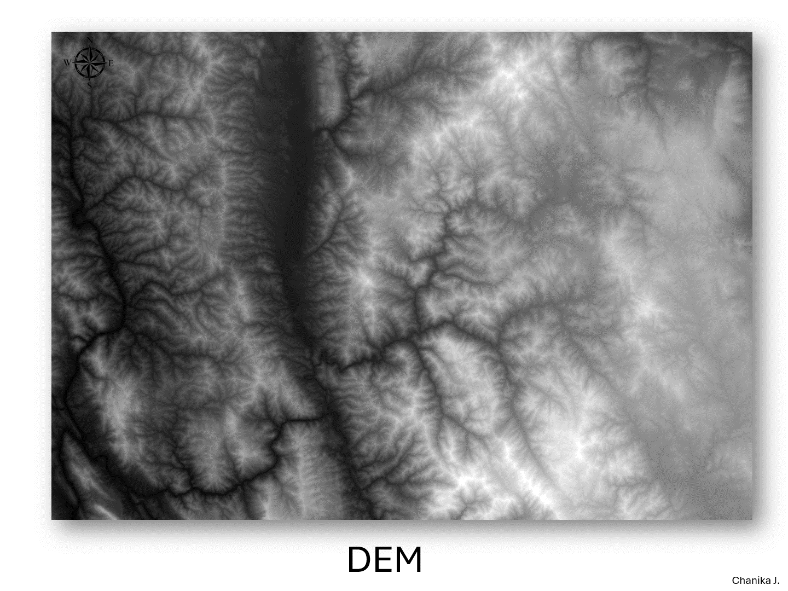
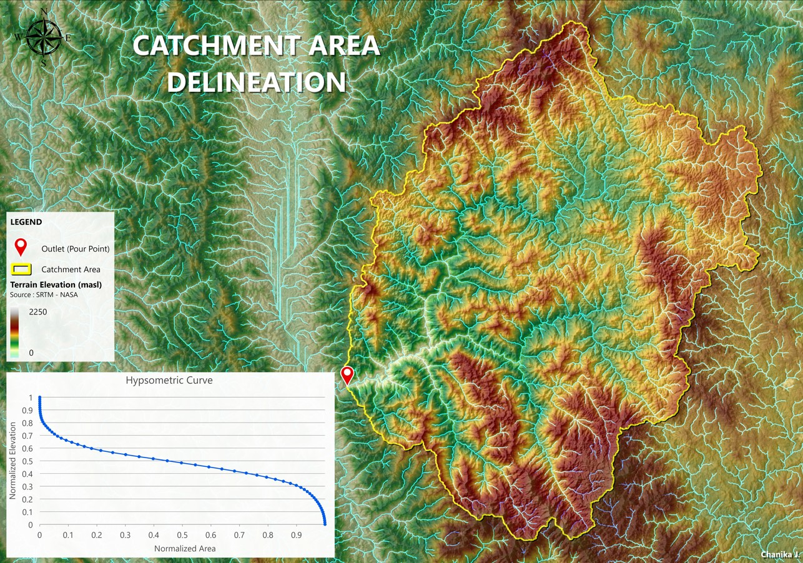

This project demonstrates the application of GIS-based hydrological analysis to delineate a catchment area contributing runoff to a defined outlet. Using Digital Elevation Model (DEM) data, the workflow supports early-stage hydropower and water resources assessment by identifying drainage boundaries, flow paths, and terrain characteristics that influence inflow behavior.
Key tasks included:
This analysis was performed using DEM data derived from SRTM (Shuttle Radar Topography Mission), © NASA / USGS.